pyvista.plotting.charts.Axis#
- class Axis(label='', range=None, grid=True, *, _wrap=None)[source]#
Pythonic interface for a VTK Axis, used by 2D charts.
- Parameters:
- label
str,optional Axis label. Defaults to the empty string
""(no visible label).- range
listortupleoffloat,optional Axis range, denoting the minimum and maximum values displayed on this axis. Setting this to any valid value other than
Nonewill change this axis behavior to'fixed'. Setting it toNonewill change the axis behavior to'auto'. Defaults toNone(automatically scale axis).- gridbool,
optional Flag to toggle grid lines visibility for this axis. Defaults to
True.
- label
- Other Parameters:
- _wrap
vtk.vtkAxis,optional Wrap an existing VTK Axis instance. Defaults to
None(no wrapping).
- _wrap
- Attributes:
- property behavior#
Set the axis’ scaling behavior.
Allowed behaviors are
'auto'to automatically rescale the axis to fit all visible datapoints in the plot, or'fixed'to use the user defined range.Examples
Manually specify the x-axis range of a 2D chart.
>>> import pyvista >>> chart = pyvista.Chart2D() >>> _ = chart.line([0, 1, 2], [2, 1, 3]) >>> chart.x_axis.range = [0, 5] >>> chart.show()
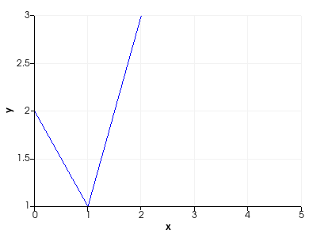 Revert to automatic axis scaling.
>>> chart.x_axis.behavior = "auto" >>> chart.show()

>>> chart.x_axis.range [0.0, 2.0]
- property grid#
Return or set the axis’ grid line visibility.
Examples
Create a 2D chart with grid lines disabled for the x-axis.
>>> import pyvista >>> chart = pyvista.Chart2D() >>> _ = chart.line([0, 1, 2], [2, 1, 3]) >>> chart.x_axis.grid = False >>> chart.show()
- property label#
Return or set the axis label.
Examples
Set the axis label to
"Axis Label".>>> import pyvista >>> chart = pyvista.Chart2D() >>> _ = chart.line([0, 1, 2], [2, 1, 3]) >>> chart.x_axis.label = "Axis Label" >>> chart.show()
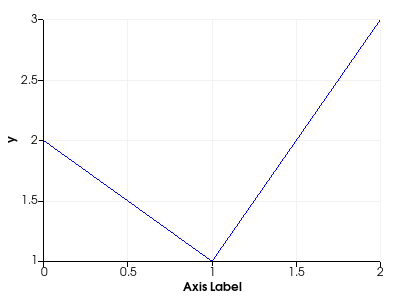
- property label_size#
Return or set the size of the axis label font.
Examples
Set the x-axis label font size of a 2D chart to 20.
>>> import pyvista >>> chart = pyvista.Chart2D() >>> _ = chart.line([0, 1, 2], [2, 1, 3]) >>> chart.x_axis.label_size = 20 >>> chart.x_axis.label_size 20 >>> chart.show()
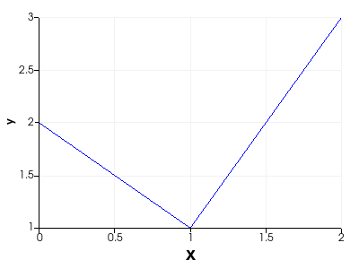
- property label_visible#
Return or set the axis label’s visibility.
Examples
Hide the x-axis label of a 2D chart.
>>> import pyvista >>> chart = pyvista.Chart2D() >>> _ = chart.line([0, 1, 2], [2, 1, 3]) >>> chart.x_axis.label_visible = False >>> chart.show()
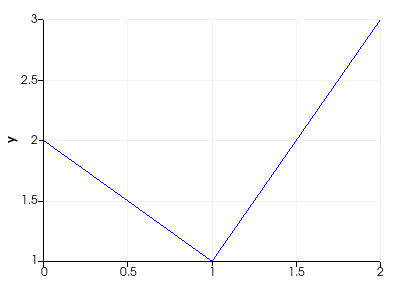
- property log_scale#
Flag denoting whether a log scale is used for this axis.
Note that setting this property to
Truewill not guarantee that the log scale will be enabled. Verify whether activating the log scale succeeded by rereading this property.Examples
Create a 2D chart.
>>> import pyvista >>> chart = pyvista.Chart2D() >>> _ = chart.line([0, 1, 2, 3, 4], [1e0, 1e1, 1e2, 1e3, 1e4]) >>> chart.show()
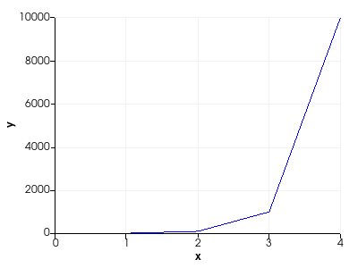 Try to enable the log scale on the y-axis.
>>> chart.y_axis.log_scale = True >>> chart.show()
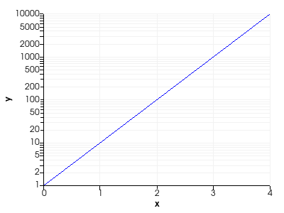 >>> chart.y_axis.log_scale True
- property margin#
Return or set the axis margin.
Examples
Create a 2D chart.
>>> import pyvista >>> chart = pyvista.Chart2D() >>> chart.background_color = 'c' >>> _ = chart.line([0, 1, 2], [2, 1, 3]) >>> chart.show()
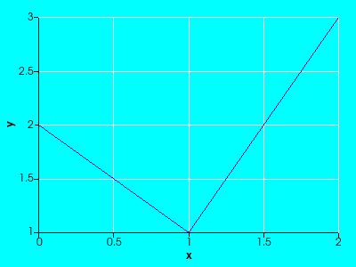 Manually specify a larger (bottom) margin for the x-axis and a larger (left) margin for the y-axis.
>>> chart.x_axis.margin = 50 >>> chart.y_axis.margin = 50 >>> chart.show()
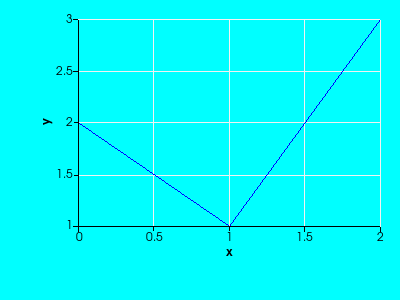
- property range#
Return or set the axis range.
This will automatically set the axis behavior to
"fixed"when a valid range is given. Setting the range toNonewill set the axis behavior to"auto".Examples
Manually specify the x-axis range of a 2D chart.
>>> import pyvista >>> chart = pyvista.Chart2D() >>> _ = chart.line([0, 1, 2], [2, 1, 3]) >>> chart.x_axis.range = [0, 5] >>> chart.show()

Revert to automatic axis scaling.
>>> chart.x_axis.range = None >>> chart.show()
- property tick_count#
Return or set the number of ticks drawn on this axis.
Setting this property to a negative value or
Nonewill automatically determine the appropriate amount of ticks to draw.Examples
Create a 2D chart with a reduced number of ticks on the x-axis.
>>> import pyvista >>> chart = pyvista.Chart2D() >>> _ = chart.line([0, 1, 2], [2, 1, 3]) >>> chart.x_axis.tick_count = 5 >>> chart.show()

Revert back to automatic tick behavior.
>>> chart.x_axis.tick_count = None >>> chart.show()

- property tick_label_size#
Return or set the size of the axis tick label font.
Examples
Set the x-axis tick label font size of a 2D chart to 20.
>>> import pyvista >>> chart = pyvista.Chart2D() >>> _ = chart.line([0, 1, 2], [2, 1, 3]) >>> chart.x_axis.tick_label_size = 20 >>> chart.x_axis.tick_label_size 20 >>> chart.show()
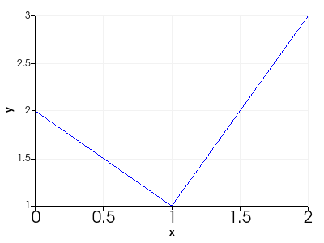
- property tick_labels#
Return or set the tick labels for this axis.
You can specify a sequence, to provide a unique label to every tick position; a string, to describe the label format to use for each label; or
None, which will revert back to the default tick labels. A label format is a string consisting of an integer part, denoting the precision to use, and a final character, denoting the notation to use.Allowed notations:
"f"for fixed notation"e"for scientific notation.
Examples
Create a 2D chart with custom tick locations and labels on the y-axis.
>>> import pyvista >>> chart = pyvista.Chart2D() >>> _ = chart.line([0, 1, 2], [2, 1, 3]) >>> chart.y_axis.tick_locations = (0.2, 0.4, 0.6, 1, 1.5, 2, 3) >>> chart.y_axis.tick_labels = ["Very small", "Small", "Still small", ... "Small?", "Not large", "Large?", ... "Very large"] >>> chart.show()

Revert back to automatic tick placement.
>>> chart.y_axis.tick_locations = None >>> chart.y_axis.tick_labels = None >>> chart.show()

Specify a custom label format to use (fixed notation with precision 2).
>>> chart.y_axis.tick_labels = "2f" >>> chart.show()
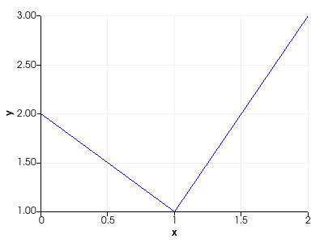
- property tick_labels_offset#
Return or set the offset of the tick labels for this axis.
Examples
Create a 2D chart with an x-axis with an increased tick size and adjusted offset for the tick labels.
>>> import pyvista >>> chart = pyvista.Chart2D() >>> _ = chart.line([0, 1, 2], [2, 1, 3]) >>> chart.x_axis.tick_size += 10 >>> chart.x_axis.tick_labels_offset += 12 >>> chart.show()
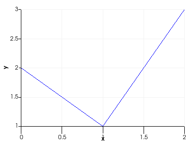
- property tick_labels_visible#
Return or set the tick label visibility for this axis.
Examples
Create a 2D chart with hidden tick labels on the y-axis.
>>> import pyvista >>> chart = pyvista.Chart2D() >>> _ = chart.line([0, 1, 2], [2, 1, 3]) >>> chart.y_axis.tick_labels_visible = False >>> chart.show()
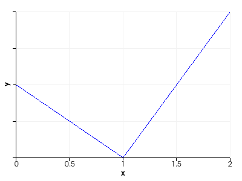
- property tick_locations#
Return or set the tick locations for this axis.
Setting this to
Nonewill revert back to the default, automatically determined, tick locations.Examples
Create a 2D chart with custom tick locations and labels on the y-axis.
>>> import pyvista >>> chart = pyvista.Chart2D() >>> _ = chart.line([0, 1, 2], [2, 1, 3]) >>> chart.y_axis.tick_locations = (0.2, 0.4, 0.6, 1, 1.5, 2, 3) >>> chart.y_axis.tick_labels = ["Very small", "Small", "Still small", ... "Small?", "Not large", "Large?", ... "Very large"] >>> chart.show()
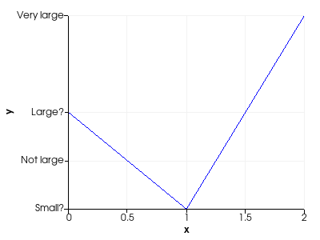 Revert back to automatic tick placement.
>>> chart.y_axis.tick_locations = None >>> chart.y_axis.tick_labels = None >>> chart.show()

- property tick_size#
Return or set the size of this axis’ ticks.
Examples
Create a 2D chart with an x-axis with an increased tick size and adjusted offset for the tick labels.
>>> import pyvista >>> chart = pyvista.Chart2D() >>> _ = chart.line([0, 1, 2], [2, 1, 3]) >>> chart.x_axis.tick_size += 10 >>> chart.x_axis.tick_labels_offset += 12 >>> chart.show()

- property ticks_visible#
Return or set the tick visibility for this axis.
Examples
Create a 2D chart with hidden ticks on the y-axis.
>>> import pyvista >>> chart = pyvista.Chart2D() >>> _ = chart.line([0, 1, 2], [2, 1, 3]) >>> chart.y_axis.ticks_visible = False >>> chart.show()
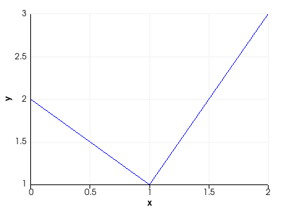
- toggle()[source]#
Toggle the axis’ visibility.
Examples
Create a 2D chart.
>>> import pyvista >>> chart = pyvista.Chart2D() >>> _ = chart.line([0, 1, 2], [2, 1, 3]) >>> chart.show()

Toggle the visibility of the y-axis.
>>> chart.y_axis.toggle() >>> chart.show()
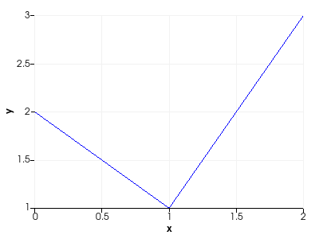
- property visible#
Return or set the axis’ visibility.
Examples
Create a 2D chart with no visible y-axis.
>>> import pyvista >>> chart = pyvista.Chart2D() >>> _ = chart.line([0, 1, 2], [2, 1, 3]) >>> chart.y_axis.visible = False >>> chart.show()